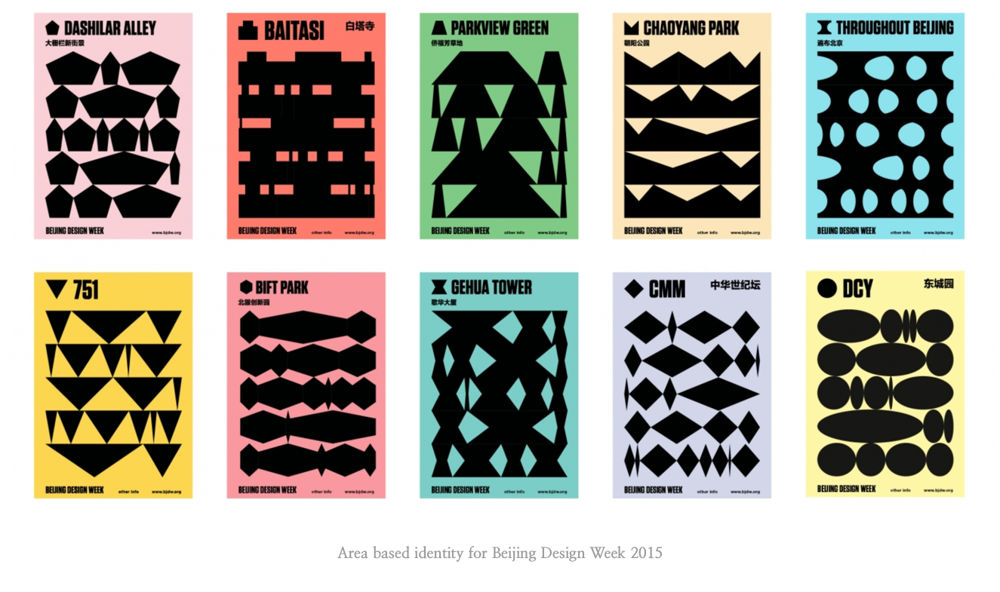
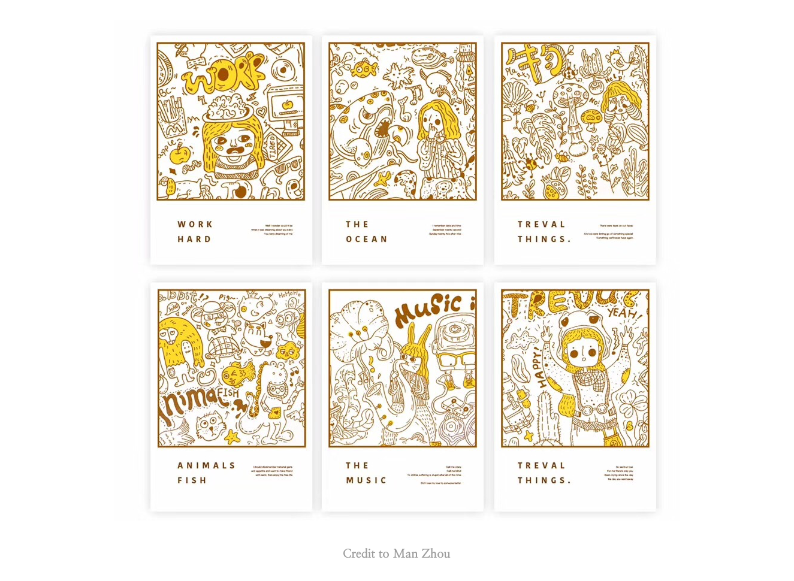

7 in 7 concepts
Three design concepts
1. Processing Hangzhou
I lived in Hangzhou for four years, and it is the most beautiful city in China. It has a very long history, and it is one of the seven ancient capitals of China. Hangzhou was once applauded as “the most splendid and luxurious city in the world”. It has many historical cultures and natural scenery. Processing Hangzhou is going to talk about the feelings that this city brings to me.
INSPRITIONS
When I saw the project Area based identity for Beijing and zach.lieberman made this into a live version. I want to do the same way, because Hangzhou has more culture symbols that can be visualized in shapes

2. appreciation & celebration
All the holidays around us are used to be grateful. Children’s Day is to thank the children for giving the world innocence and fantasy. Labor Day is to thank the value created by the workers. Birthday is to thank people who have helped and loved us…
INSPRITIONS
I want to try this in an illustration way. When I saw those works from a graphic designer named Man Zhou, I decided to do the project in this style.

3. self-portrait
Do we look the same every day? No, we have different moods, different experiences, different wearings, meet different people, so we look totally different every. I want to keep self-portrait a kind of dairy and self-inspect way to record what happened to me today.
INSPRITIONS